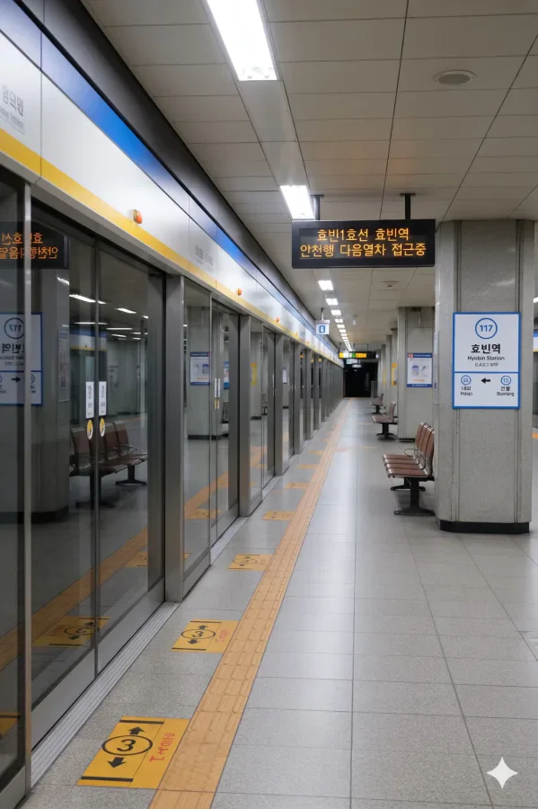
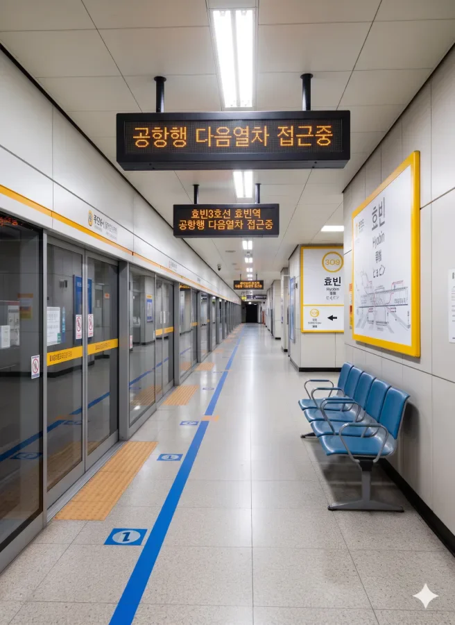
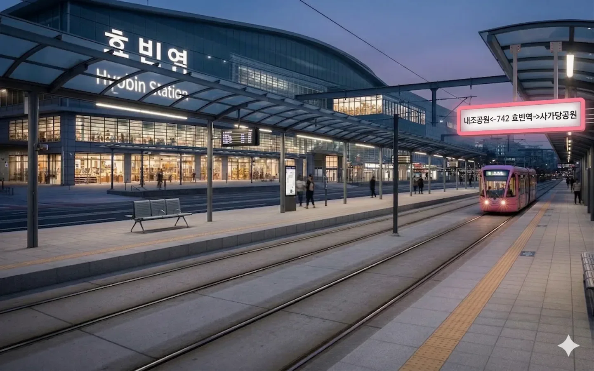
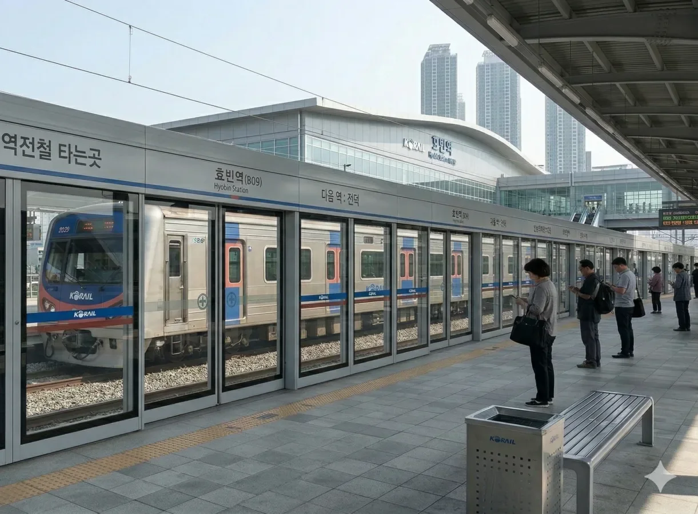
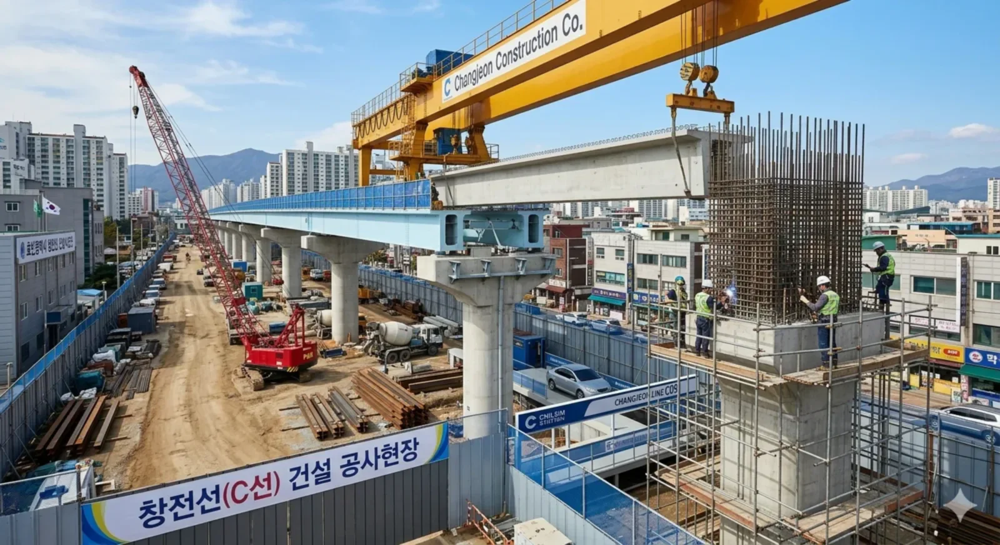

- 1. 개요
- 2. 역 정보
- 3. 역 주변 정보
- 3.1. 출구 정보
- 3.2. 역 구내 및 주요 인접 시설 상세
- 4. 일평균 이용객
- 5. 승강장
- 6. 연계 교통
- 6.1. 향후 계획 및 관련 노선
- 7. 효빈역지하상가
- 7.1. 개요 및 구조
- 7.2. 가동사거리역 연계 및 도보 환승
- 7.3. 상권 특성 (구간별 차이)
- 7.4. 시설 관리 및 미래의 입체 환승
- 8. 여담
- 8.1. 비수도권 환승 거점의 자존심 대결 (vs 부산 서면역)과 '효빈 던전'
- 8.2. 역 구내의 심장: 한국철도공사 효빈덕북본부와 효빈차량사업소(기지)
- 8.3. '아쿠아' 아파트 카르텔의 본진 효빈역아쿠아와 효빈역주공의 공존
- 8.4. AK플라자 애니메이트 오픈런 부대 vs 효빈역전시장 국밥 어르신들의 대통합
- 8.5. 효빈동부경찰서·사가당지구대 & 효빈동부소방서·사가당119의 HAF 극한 생존기
- 8.6. 효빈사가당동우체국의 '네소베리·전리품 택배 대란'과 박효빈 시장의 쾌적 환승 설계
- 8.7. 두청운수의 몰락 박제 벽면과 창전선(C17)·HDTX-A가 불러올 6노선 우주 정거장
1. 개요
효빈광역시 동구 사가당동(행정동 사가당1동)에 위치하는 효빈광역시의 중앙 철도역이자 도시철도역이다.
효빈 도시철도 1호선(117번), 3호선(309번), 7호선(742번), 빈효선 광역전철(B09번)이 만나는 비수도권 최초의 4개 도시·광역철도 노선 환승역이며, 일반철도로는 빈효선(일반), 강빈선, 빈효고속선의 KTX·SRT·ITX-새마을·ITX-마음·무궁화호가 모두 정차하는 덕빈권 최대의 철도 관문이다. 향후 과좌식 모노레일인 창전선(C17번, 급행 정차 예정)이 개통되면 5개 도시·광역철도 노선이 만나는 거대 환승 허브가 될 예정이다. 사가당동 1079번지와 1080번지 일대에 거대하게 자리 잡고 있다.
또한 민자 및 통합 역사 구내에는 지역 철도망의 사령탑인 한국철도공사 효빈덕북본부 청사가 직접 입주해 있으며, 역 구내 동북측 유치선군 너머로는 시종착 일반열차·기관차·객화차의 일상 검수와 주박을 전담하는 효빈차량사업소(효빈차량기지)가 함께 자리 잡고 있다.
2. 역 정보
효빈광역시의 최대역이자 중심역. 부산의 서면역과 비수도권 최대 이용자 수를 두고 매년 엎치락뒤치락하는 무시무시한 역이다. 현재 환승 노선이 4개로 비수도권 최다이며, 2033년 창전선까지 개통하면 무려 5개 노선 환승역이 되어 명실상부한 효빈의 던전으로 등극할 예정이다.
역사 내부에 한국철도공사 효빈덕북본부가 자리하고 있어 코레일 직원들과 승무원들의 출퇴근 거점이기도 하며, 역 구내에 펼쳐진 효빈차량기지(효빈차량사업소) 덕분에 플랫폼 끝단이나 남북 연결선교에서 입환 중인 기관차와 KTX, 무궁화호 편성들을 한눈에 조망할 수 있다. (※ 단, 중정비 창인 안천구 광상동의 효빈철도차량정비단과는 별개의 구내 사업소다.)
3. 역 주변 정보
역 주변은 효빈의 구도심과 신도심이 교차하는 지점이며, AK플라자 효빈점과 홈플러스 효빈역점, 전통시장인 효빈역전시장 등 대형 상업 시설들이 역과 바로 연결되어 있어 유동 인구가 끊이지 않는다. 치안 및 재난 대응을 위한 효빈동부경찰서, 사가당지구대, 효빈동부소방서, 사가당119안전센터와 우정 거점인 효빈사가당동우체국, 그리고 대단지 주거시설인 효빈역아쿠아와 효빈역주공 아파트가 역세권을 촘촘하게 둘러싸고 있다.
3.1. 출구 정보
     효빈역 출구 정보
효빈역 출구 정보
|
||
|---|---|---|
| 번호 | 주요 시설 및 방향 | 비고 |
| 1 | 효빈역아쿠아 아파트 (동구 사가당1동 [사가당동]) 101~103동 | 주상복합 직결 |
| 2 | AK플라자 효빈점 본관, 지하 1층 애니메이트 효빈점 연결통로 | 서브컬처 성지 |
| 3 | AK플라자 효빈점 신관, 효빈역 북부광장 시내버스 환승센터 | |
| 4 | 일반열차 효빈역 (빈효선·강빈선·빈효고속선 맞이방), 한국철도공사 효빈덕북본부 (역내 동관) | 코레일 본부 |
| 5 | 효빈역아쿠아 아파트 (동구 사가당1동 [사가당동]) 정문 상가 | |
| 6 | 일반열차 효빈역 서부맞이방, 효빈차량기지(효빈차량사업소) 역구내 출입문 | 역구내 차량기지 |
| 7 | 효빈역아쿠아 아파트, 7호선 효빈역 노면전차 승강장, 사가당지구대 | 트램 환승 / 치안 |
| 8 | 홈플러스 효빈역점 정문, 효빈동부경찰서 민원봉사실 | 경찰서 초근접 |
| 9 | 홈플러스 효빈역점 주차장 입구, 효빈동부경찰서 본관 | |
| 10 | 일반열차 효빈역 2번출구, 효빈역전시장 (동구 사가당1동) 북문 | 전통시장 입구 |
| 11 | 사가당1동 행정복지센터, 효빈사가당동우체국, 사가당초·중학교 | 우체국 / 행정 |
| 12 | 일반열차 효빈역 2번출구, 효빈역전시장 (동구 사가당1동) 중앙아케이드·국밥거리 | 전통시장 중심 |
| 13 | 효빈역주공 아파트 (동구 사가당1동 [사가당동]), 사가당아파트 | 대단지 주거 |
| 14 | 효빈동초등학교, 효빈역주공 후문 상가 | |
| 15 | 효빈역 남부삼거리, 효빈동부소방서, 사가당119안전센터 | 소방서 / 119 |
| 16 | 효빈동중학교, 효빈동고등학교 | 박효빈 시장 모교 방면 |
| 17 | 롯데슈퍼 사가당점, 효빈동여자중·고등학교 | |
3.2. 역 구내 및 주요 인접 시설 상세
- 역 구내 철도 중추 시설 (4·6번 출구 및 일반열차 구역): 효빈역 민자·통합역사 동관 상층부(역 구내)에는 효빈시와 덕빈북도 북부 철도망을 총괄하는 한국철도공사 효빈덕북본부가 입주해 있다. 또한 일반열차 승강장 동북쪽 구내에는 효빈차량기지(효빈차량사업소)가 드넓게 자리 잡아 빈효선·강빈선 시종착 열차의 정밀 일상검수와 객화차 조차를 수행한다.
- 치안 및 소방 벨트 (7·8·9·15번 출구): 하루 14만 명이 넘는 도시철도 승객과 수만 명의 KTX 이용객이 뒤엉키는 역답게 치안·소방 인프라도 최고 수준이다. 8·9번 출구 바로 앞에 효빈동부경찰서 본서가 버티고 있고, 가장 혼잡한 7번 출구 광장 옆에는 사가당지구대가 24시간 불을 밝힌다. 남부 15번 출구 앞에는 효빈동부소방서와 사가당119안전센터가 자리해 응급환자 발생 시 1분 내 출동이 가능하다.
- 우정 및 전통 상권 (10·11·12번 출구): 11번 출구 앞 효빈사가당동우체국은 역세권 상인들과 AK플라자 굿즈샵 방문객들의 택배 물량을 소화하는 핵심 우체국이며, 10·12번 출구 앞 효빈역전시장(사가당1동)은 70년 역사를 자랑하는 동구 최대의 재래시장이다.
- 대단지 아파트 (1·5·7·13번 출구): 북서측 1·5·7번 출구는 아쿠아 아파트 시리즈 중에서도 대장주로 꼽히는 효빈역아쿠아(사가당1동 [사가당동], 850세대 주상복합)와 직결되어 있으며, 남동측 13번 출구 일대에는 사가당1동의 터줏대감인 효빈역주공 아파트 단지가 펼쳐져 있다.
4. 일평균 이용객
1호선은 부산 서면역에 버금갈 정도로 이용객수가 많으며, 효빈에서도 가장 이용객수가 많은 단일 노선역이다. 서면역 혼자 무쌍을 찍는 부산과 대비하여 7만명이 넘는 역이 하나 더 있어 인구대비 엄청난 수요를 보여주는 장면이다.
|
효빈역 연도별 일평균 이용객 (단위: 명)
| |||||||
|---|---|---|---|---|---|---|---|
| 연도 | 1호선 | 3호선 | 7호선 | 빈효선 | 창전선 | 총합 | 비고 |
| 2010년 | 89,410명 | 36,787명 | 12,187명 | - | - | 138,384명 | |
| 2011년 | 90,655명 | 37,788명 | 11,988명 | - | - | 140,431명 | |
| 2012년 | 90,210명 | 37,106명 | 11,506명 | - | - | 138,822명 | |
| 2013년 | 90,197명 | 37,881명 | 12,081명 | - | - | 140,159명 | |
| 2014년 | 90,442명 | 38,448명 | 12,448명 | - | - | 141,338명 | |
| 2015년 | 91,422명 | 39,328명 | 12,328명 | - | - | 143,078명 | |
| 2016년 | 92,542명 | 35,928명 | 12,312명 | - | - | 140,782명 | |
| 2017년 | 74,365명 | 34,878명 | 13,578명 | 18,122명 | - | 140,943명 | 빈효선 개통 |
| 2018년 | 71,084명 | 34,076명 | 13,676명 | 22,221명 | - | 141,057명 | |
| 2019년 | 71,464명 | 33,875명 | 13,022명 | 23,111명 | - | 141,472명 | |
| 2020년 | 58,116명 | 18,834명 | 9,422명 | 12,422명 | - | 98,794명 | 코로나19 여파 |
| 2021년 | 59,826명 | 18,675명 | 9,928명 | 12,532명 | - | 100,961명 | |
| 2022년 | 67,178명 | 29,051명 | 11,322명 | 21,242명 | - | 128,793명 | 수요 회복 |
| 2023년 | 71,106명 | 32,099명 | 11,552명 | 23,999명 | - | 138,756명 | |
| 2024년 | 71,192명 | 32,122명 | 12,032명 | 25,292명 | - | 140,638명 | 비수도권 1위 |
1호선은 부산 서면역에 버금갈 정도로 이용객수가 많으며, 효빈에서도 가장 이용객수가 많은 단일 노선역이다. 서면역 혼자 무쌍을 찍는 부산과 대비하여 7만명이 넘는 역이 하나 더 있어 인구대비 엄청난 수요를 보여주는 장면이다. 빈효광역선 개통전에는 1호선 이용객수가 무려 9만명이 넘어가기도 했지만, 현재는 이용객이 약간 분산되어서 그정도는 아니다. 빈효광역선으로 분산되어도 자체에서 분산된거라 사실상 역 전체 이용객수는 코로나 시절 떨어진 수요를 제외하고는 크게 변하지 않았고, 코로나팬데믹이 종료된 2022년 후반부터는 다시 수요가 회복되며 이용객수가 늘어나고 있다.
서면역과 비교해 역전체로 볼 때 비수도권 1위의 자리를 두고 엎치락 뒤치락하는 정도인데, 2006년에 추월해서 2015년까지 서면역보다 우위였지만, 2016년부터는 이용객이 약간 감소한데다 서면역이 증가해 추월당했다. 그러나 코로나 시절에는 서면역 대비 환승노선이 많은 점으로 인해 다시 비수도권 1위가 되어 수요가 회복된 현재까지 비수도권 1위를 유지중이다.
노선별 순위는 1호선은 당연히 1호선에서 1위이고, 3호선에서는 3위, 7호선에서도 1위, 빈효광역선에서는 3위를 차지하고 있어 각 노선별로 순위가 높은 편이다.
5. 승강장
5.1. 1호선

| 내조(완행) / 중앙로(급행) ↑ | ||||||
| 하 | ㅣ | ㅣ | ㅣ | ㅣ | 상 | |
| ↓ 보몽(완행) / 전천(급행) | ||||||
| 상 |
효빈 도시철도 1호선 (완행/급행 공용) |
곽암해수욕장 · 서목 · 승남해수욕장 방면 (급행 정차) |
| 하 |
효빈 도시철도 1호선 (완행/급행 공용) |
안천 · 장선 방면 (급행 정차) |
5.2. 3호선

| 덕현(완행/급행) ↑ | |||
| 하 | ㅣ | ㅣ | 상 |
| ↓ 사능(완행) / 고속버스터미널(급행) | |||
| 상 |
효빈 도시철도 3호선 (완행/급행 공용) |
팔조 방면 (급행 정차) |
| 하 |
효빈 도시철도 3호선 (완행/급행 공용) |
효빈국제공항 방면 (급행 정차) |
5.3. 7호선

| 내조공원 ↑ | |||
| 하 | ㅣ | ㅣ | 상 |
| ↓ 사가당공원 | |||
| 상 |
효빈 도시철도 7호선 |
효빈대학교입구 방면 |
| 하 |
효빈 도시철도 7호선 |
중보로 · 어간중앙 방면 |
5.4. 빈효선 광역전철

| 신덕(완행/급행) ↑ | |||||
| ㅣ | 1 | ㅣ | ㅣ | 2 | ㅣ |
| ↓ 전덕(완행/급행) | |||||
| 1 |
빈효선 광역전철 (완행/급행 공용) |
효빈항 방면 (급행 정차) |
| 2 |
빈효선 광역전철 (완행/급행 공용) |
이자 · 약산 · 궁하 · 천주 · 고남 방면 (급행 정차) |
5.5. 창전선 (예정)

| 전 덕 ↑ | ||||
| 하 | ㅣ | ㅣ | 상 | |
| ↓ 사 능 | ||||
| 상 |
창전선 (완행/급행 정차 예정)
|
전덕 · 하성천 · 팔조 방면 |
| 하 |
창전선 (완행/급행 정차 예정)
|
사능 · 시청 · 토모리해수욕장 방면 |
6. 연계 교통
- 일반열차 (빈효선·강빈선·빈효고속선): 무궁화호, ITX-마음, ITX-새마을, KTX, KTX-산천, SRT 이용 가능
- 시내버스:
구분 노선 번호 순방향 1, 4, 6, 9, 10, 13, 15, 18, 26, 39, 111, 129, 131, 132, 172, 192, 193, 219, 242, 371, 391, 1000, 1111, 2000, 3000, 6000, 6666 역방향 01-1, 04-1, 06-1, 09-1, 10-1, 31, 51, 81, 62, 93, 111-1, 129, 311, 312, 712, 192, 193, 129, 422, 371, 391, 1000R, 1111R, 2000R, 3000R, 6000R, 6666R - 효빈역 북부출구 (1, 3, 7호선 구역)
- 효빈역 남부출구 (빈효광역선 구역)
6.1. 향후 계획 및 관련 노선
🚆HDTX-A (덕빈권 광역급행철도 A선) 경유 확정
- 현재 국가 및 지자체 차원에서 야심 차게 추진 중인 덕빈권 최상위 광역교통망 HDTX-A(덕빈권 광역급행철도 A선)가 효빈역을 핵심 정차역으로 경유할 예정이다.
- HDTX-A 노선이 개통되면 기존 일반열차나 광역버스로 접근해야 했던 외곽 지역 및 덕빈남도(덕주시 등)와의 연계성이 비약적으로 상승하며, 효빈역은 명실상부한 덕빈권 전체의 최강 메가 환승 허브로 군림하게 된다. 기존 4개 환승 노선에 창전선, 그리고 HDTX-A까지 추가되면 무려 6개 노선이 교차하게 되는 셈이다.
- 대심도(지하 40m 이상)를 통과하는 광역급행철도의 특성상, 현재 1호선과 3호선, 창전선이 얽혀있는 효빈역 지하 공간보다 훨씬 더 깊은 곳에 초대형 HDTX 전용 승강장과 환승 통로가 신설될 계획이다.
- 이로 인해 현재도 비수도권 최대의 환승 난이도를 자랑하며 '효빈 던전'이라 불리는 효빈역의 지하 미로가 앞으로는 상상을 초월할 정도로 깊고 거대해질 것이라는 우려 섞인 기대(?)가 철도 동호인들 사이에서 쏟아지고 있다.
환승하다가 던전 보스 몹을 만날 수도 있다.
7. 효빈역지하상가
효빈광역시 동구 사가당동 일대에 위치한 길이 약 850m의 대형 지하도상가. 효빈시설관리공단에서 관리한다.
7.1. 개요 및 구조
- 효빈시 철도 교통의 알파이자 오메가인 효빈역(1, 3, 7호선, 빈효선 광역전철, KTX/SRT 등 일반열차)과, 4호선 및 6호선이 십자(十)로 교차하는 서브컬처 교통의 요지 가동사거리역을 지하로 완벽하게 이어주는 거대한 지하 통로 겸 상가다.
- 대한민국 철도 이용객 최상위권을 달리는 효빈역의 막대한 유동인구와, 가동사거리역 인근의 주거 및 상업지구 수요를 이어주기 위해 건설되었다.
- 초장축 일자(一)형 튜브 구조: 효빈역 지하 1층 대합실 끝자락에서 시작해 사가당동 지하를 그대로 관통하여 가동사거리역 대합실까지 850m를 일직선으로 꽂아버리는 상남자스러운 구조다.
- 효빈역 메인 광장: 일반열차와 KTX, 그리고 1, 3, 7, 빈효선 환승 게이트가 쏟아져 나오는 거대 로비와 맞닿아 있으며, 반대편은 가동사거리역의 4호선(주황색)과 6호선(보라색) 환승 게이트를 양옆으로 끼고 상가가 마무리된다.
7.2. 가동사거리역 연계 및 도보 환승
- 가장 큰 특징은 이 상가가 두 거대 환승역을 잇는 '간접 환승 통로' 역할을 겸한다는 점이다. 노선도 상으로는 효빈역(1, 3, 7, 빈효선)과 가동사거리역(4, 6호선)이 별개의 역이지만, 두 역 사이의 850m 구간이 지하상가로 뻥 뚫려 있기 때문에 환승 저항을 감수하고서라도 운동 삼아, 혹은 쇼핑을 하며 걸어서 노선을 갈아타는 이른바 '도보 환승러'들이 매우 많다.
물론 850m 평지 걷기보다 헬게이트 계단 오르내리기를 극혐하는 사람들의 탁월한 선택이다 - 지하철 요금 1회분을 아끼기 위해 가동사거리역(4, 6호선)에서 내린 승객들이 굳이 환승을 찍지 않고 이 850m 통로를 경보로 걸어 효빈역에서 KTX나 다른 노선을 타는 '짠돌이 루트'로 악명 높다. 다만 캐리어를 끌고 걷기엔 바닥 타일의 홈 때문에 덜덜거리는 소음과 진동이 상당하다.
- 사실상 전국에서 철도 교통으로 올 수 있는 모든 루트가 이 상가를 통해 가동사거리 일대로 통하는 셈이다. 효빈역 광장 환승센터와 가동사거리 일대 중앙버스전용차로 정류장을 지하로 전부 이어주기 때문에 횡단보도를 건널 필요가 아예 없다.
7.3. 상권 특성 (구간별 차이)
양 끝에 위치한 철도역의 성격이 확연히 달라, 상가 내부의 점포 구성도 구간별로 확연한 차이를 보인다.
- 효빈역 및 AK플라자 효빈점 인근 (여행객/트렌디 상권): KTX나 일반열차를 타기 전 시간을 때우거나 선물을 사는 여행객들이 주 타겟이다. 캐리어와 여행용품 전문점, 지역 특산물 빵집, AK플라자 식품관으로 이어지는 입구 주변의 고급 프랜차이즈 카페 등이 빽빽하다. 특히 애니메이트 등 서브컬처 성지가 있는 AK플라자 지하 1층 식품관과 바로 직결되는 길목이라 굿즈 샵이나 캡슐 토이 머신들도 눈에 띈다. 백화점 쇼핑객들이 지하상가 쪽으로 흘러나오기도 하고, 반대로 상가 이용객이 더위를 피해 백화점 안으로 피신하기도 한다.
- 중간 구역 (일반 쇼핑): 전형적인 지하도상가의 모습이다. 중저가 의류 패션, 신발, 화장품, 통신사 대리점들이 끝없이 이어지며 중간중간 간이 벤치가 있어 850m를 걷다 지친 사람들의 쉼터가 된다.
- 가동사거리역 인근 (학생/생활 밀착 상권): 가동사거리역(4, 6호선 환승 게이트) 쪽에 가까워질수록 덕현고등학교, 부선초등학교 등 학교와 아파트 단지가 밀집한 지상 상권의 영향을 받아 교복 바지 수선집, 가성비 분식집, 문구점, 10대 취향의 보세 옷가게 비중이 확 높아진다.
7.4. 시설 관리 및 미래의 입체 환승
- 시설 관리: 효빈시설관리공단에서 최우선 순위로 관리하는 핵심 사업장 중 하나다. 하루에도 수십만 명이 캐리어를 끌고, 교복을 입고, 정장을 입고 스쳐 지나가는 통로이다 보니 대리석 바닥 마모 속도가 타 상가에 비해 압도적으로 빠르다.
- 특히 양쪽 역 모두 효빈 애니메이션 페스티벌(HAF)이나 각종 이벤트 시 코스플레이어들과 서브컬처 팬들이 대거 몰리는 곳(가동사거리역은 아쿠아와 뱅드림 팬들의 환승 성지, 효빈역은 AK플라자 애니메이트 성지)이라, 행사 시즌이 되면 공단 측에서 자체적으로 양 역 구간을 잇는 레드카펫(...) 무늬의 안내선을 바닥에 깔아주는 덕력 높은 관리 방식을 보여주기도 한다.
- 두 역의 마스코트 캐릭터 컬러링(4호선 다로나의 귤색, 6호선 라세나의 보라색, 1호선 고나미의 파란색, 3호선 박라미의 노란색 등)이 총출동하는 구간이다 보니, 시설공단에서도 중간 구역 조명에 은근슬쩍 해당 마스코트 색상들을 섞어 놓는다는 괴담 반 진담 반의 이야기가 돌고 있다.
- 창전선 연계의 3D 입체 동선: 지하상가 하나가 무려 6개(예정 포함 7개)의 도시철도 및 광역전철 노선과 연결되는 기적의 떡잎을 자랑한다. 하지만 2033년 개통 예정인 창전선은 연약지반 문제 등으로 인해 고가경전철로 지어질 예정이고, 7호선은 지상 노면전차(트램)다. 따라서 향후 가동사거리역에서 지하 깊숙한 6호선을 타고 온 승객이 창전선으로 환승하기 위해 지하상가를 850m나 걸어 효빈역에 도착한 뒤, 다시 지상 4~5층 높이의 고가 승강장으로 에스컬레이터를 타고 등반해야 하는 '지구 내핵부터 대기권까지' 코스가 완성될 예정이다.
지하 던전에서 천공의 성으로 향하는 엘리베이터가 필수다
8. 여담
● 비수도권 환승 거점의 자존심: 부산 서면역과 이용객 1위를 다투는 자존심 대결이 치열하다. 2022년 팬데믹 종료 이후 다시 1위 자리를 탈환했다.
● '철덕' 시장의 집대성: 철도 동호인 출신인 박효빈 시장이 직접 설계에 관여한 역으로, 지하철과 노면전차 사이의 환승 동선이 매우 쾌적하다.
● HAF(효빈 애니메이션 페스티벌)의 관문: 축제 기간에는 역사 전체가 애니메이션 캐릭터로 도배되며 안내방송도 성우가 담당한다. 오타쿠들의 성지이자 일반인들의 당혹스러운 장소(...)
● 두청운수의 몰락과 7호선의 부활: 과거 7호선 폐지를 주장하던 비리 기업 두청운수의 만행과 부활사가 대합실 벽면에 기록되어 있다.
8.1. 비수도권 환승 거점의 자존심 대결 (vs 부산 서면역)과 '효빈 던전'
효빈역 도시철도 구역은 일평균 승하차 인원이 14만 명을 가뿐히 돌파하며, 부산 도시철도 1·2호선 서면역과 매년 '비수도권 전체 도시철도 이용객 1위' 왕좌를 놓고 피 튀기는 자존심 대결을 벌인다. 서면역이 2개 노선의 압도적인 상권 집중도로 승부한다면, 효빈역은 1호선(파란색)·3호선(노란색)·7호선(분홍색 노면전차)·빈효선 광역전철(연청색)의 4개 노선에 더해 KTX·SRT·무궁화호가 정차하는 일반철도(빈효선·강빈선·빈효고속선) 수요까지 한 몸에 빨아들이는 물량전으로 맞선다.
문제는 이 엄청난 노선들이 지하 3층(3호선)부터 지하 2층(1호선), 지상 1층 노면(7호선 트램), 지상 3층(일반열차 맞이방), 지상 5층(빈효선 광역전철)까지 수직으로 켜켜이 쌓여 있다는 점이다. 초행길인 외지인이 KTX에서 내려 7호선 트램을 타려다 실수로 지하 3층 3호선 승강장으로 굴러떨어지거나, 850m 지하상가로 빨려 들어가 옆 동네 가동사거리역에서 강제 사출당하는 일이 다반사다. 때문에 효빈 시민들은 효빈역에서 약속을 잡을 때 절대 "효빈역에서 보자"고 하지 않고, "2번 출구 AK플라자 회전문 앞"이나 "7번 출구 아쿠아 아파트 분수대 앞"처럼 좌표를 소수점 단위까지 찍어준다.
8.2. 역 구내의 심장: 한국철도공사 효빈덕북본부와 효빈차량사업소(기지)
일반열차 효빈역 4번·6번 출구 상부의 동관 빌딩에는 코레일의 핵심 지역본부인 한국철도공사 효빈덕북본부가 역 구내에 직접 입주해 있다. 과거 윤대환 시정 시절의 암흑기를 견뎌내고, 2023년 '덕업일치의 전설' 정시원 본부장과 현 성유정 본부장 체제를 거치며 코레일 내에서도 가장 서브컬처 친화적이고 흑자 폭이 큰 알짜 본부로 거듭났다. HAF 기간이나 성우 내한 이벤트가 열리면 본부장 결재가 빛의 속도로 떨어져 KTX 특실 헤드레스트 커버까지 특별 콜라보 디자인으로 바뀌는 진풍경이 벌어진다.
또한 6번 출구 북동쪽 역 구내 넓은 부지에는 효빈차량사업소(효빈차량기지)가 자리 잡고 있다. 안천구 광상동에 있는 중정비 기지(효빈철도차량정비단)와 자주 혼동되지만, 이곳 효빈역 구내 기지는 빈효선·강빈선 일반열차(ITX-새마을, ITX-마음, 무궁화호)와 디젤·전기기관차의 일상 검수, 객차 청소 및 주박을 담당하는 역 구내 직결 기지다. 지상 5층 빈효선 광역전철 승강장 북쪽 끝단 유리창이 바로 이 효빈차량기지를 내려다보는 명당이라, 주말마다 대포 카메라를 든 철도 동호인(철덕)들이 입환 신호기를 따라 움직이는 기관차를 찍으려 장사진을 이룬다. 택시 기사님께 어설프게 "효빈차량기지 가주세요"라고 하면 안천구 광상동 정비단으로 갈지 여기 효빈역 6번 출구로 갈지 기사님도 뇌정지가 오니 정확히 말해야 한다.
8.3. '아쿠아' 아파트 카르텔의 본진 효빈역아쿠아와 효빈역주공의 공존
1번·5번·7번 출구를 나오면 코앞에 바다 물결 모양의 청록색 유리 커튼월로 지어진 초고층 주상복합 효빈역아쿠아(동구 사가당1동 [사가당동], 850세대)가 위용을 자랑한다. 효빈도시공사와 효빈건철이 "3면이 바다인 물의 도시 효빈(Aqua)"을 상징한다며 지은 27개 아쿠아 아파트 시리즈 중에서도 쿼드러플 역세권을 끼고 있는 명실상부한 대장주 단지다. 하지만 하필 AK플라자 애니메이트 바로 옆에 붙어 있는 바람에 전국의 《러브라이브! 선샤인!!》 팬들에게 'Aqours(아쿠아) 성지 총본산'으로 찍혀버렸고, 실제로 단지 중앙광장 분수대 주변에 심어진 온주밀감 나무에 겨울마다 입주민들이 주황색 패딩을 입혀주는 기적이 매년 목격된다.
반면 반대편 남동쪽 13번 출구로 나가면 1980년대 후반에 지어진 정겨운 붉은 벽돌의 대단지 효빈역주공 아파트(동구 사가당1동 [사가당동])가 나온다. 초현대식 주상복합인 효빈역아쿠아와 세월의 흔적이 묻어나는 효빈역주공이 기찻길과 역사를 사이에 두고 마주 보고 있는데, 두 단지 주민 모두 10·12번 출구 앞 효빈역전시장 단골이라 반찬 가게 앞에서는 아쿠아 입주민 오타쿠 청년과 주공 입주민 할머니가 나란히 서서 어묵 국물을 나눠 마시는 훈훈한 풍경이 일상이다.
8.4. AK플라자 애니메이트 오픈런 부대 vs 효빈역전시장 국밥 어르신들의 대통합
효빈역의 아침 9시 풍경은 대한민국 그 어떤 역에서도 볼 수 없는 극단적인 투트랙을 달린다. 북서쪽 2·3번 출구(AK플라자 효빈점 직결 통로) 앞에는 지하 1층 애니메이트 한정판 굿즈와 콜라보 카페 대기표를 뽑기 위해 새벽 첫차(혹은 KTX 첫차)를 타고 달려온 오타쿠들이 이타백을 메고 비장하게 진을 치고 있다.
반면 남동쪽 10·12번 출구 앞 효빈역전시장(사가당1동) 아케이드 골목에서는 새벽 기차를 타고 온 상인들과 동네 어르신들이 가마솥 돼지국밥과 선지해장국에 막걸리를 걸치며 하루를 시작한다. 재미있는 점은 오전 11시쯤 애니메이트 오픈런을 성공리에 마친 오타쿠들이 허기진 배를 채우러 삼삼오오 12번 출구 효빈역전시장 국밥골목으로 넘어온다는 것이다. 시장 상인 어르신들은 이제 양손에 캐릭터 쇼핑백과 네소베리 인형을 안고 국밥에 다대기를 푸는 젊은이들을 봐도 전혀 놀라지 않으시며, 오히려 "아이고, 오늘도 그 만화 인형 사러 서울서 기차 타고 왔능가? 고기 많이 줄게 든든히 무라!"라며 수육을 서비스로 얹어주신다. 이 맛에 효빈역 성지순례 온다는 덕후들이 한둘이 아니다.
8.5. 효빈동부경찰서·사가당지구대 & 효빈동부소방서·사가당119의 HAF 극한 생존기
8·9번 출구 앞의 효빈동부경찰서와 7번 출구 앞 사가당지구대, 그리고 15번 출구 앞 효빈동부소방서(사가당119안전센터) 대원들에게 효빈역은 1년 365일 잠들지 않는 야전병원 겸 최전선이다. 평소에도 일평균 14만 명이 넘는 도시철도 승객과 일반열차 승객들의 분실물 신고, 주취자 구호로 눈코 뜰 새가 없다.
그러다 매년 여름·가을 HAF(효빈 애니메이션 페스티벌)가 개막하면 이 네 기관은 사실상 합동 작전사령부로 변모한다. KTX에서 내리자마자 2m짜리 우레탄 대검이나 마법 지팡이를 들고 개찰구를 통과하려는 코스어들과 일반 승객들이 엉키지 않게 동선을 분리하는 것은 사가당지구대 순경들의 몫이고, 무거운 갑옷 코스프레를 한 채 850m 지하상가를 걷다 탈수 증세로 쓰러진 코스어를 이송하는 것은 사가당119안전센터 구급대원들의 몫이다. 심지어 사가당지구대 내부에는 길 잃은 외국인 성지순례객들을 위해 일본어·영어·중국어로 된 '효빈시 노선별 성지 안내도'가 상비되어 있으며, 경찰관들이 "러브라이브 성지는 1호선 보몽역으로 가시고, 뱅드림 사아야 빵집은 3호선으로 한 정거장만 가서 사능역에서 내리세요"라며 원어민급 안내를 해준다.
8.6. 효빈사가당동우체국의 '네소베리·전리품 택배 대란'과 박효빈 시장의 쾌적 환승 설계
11번 출구에서 도보 2분 거리에 있는 효빈사가당동우체국은 전국 우체국 중 주말 직후 월요일 오전 소포 접수량이 기형적으로 폭증하는 곳으로 유명하다. 타지에서 KTX를 타고 효빈시에 놀러 온 성지순례객들이 AK플라자 애니메이트와 HAF 전시장에서 쓸어 담은 굿즈, 피규어 박스, 특대형 네소베리 인형들을 도저히 손에 들고 귀가할 엄두가 안 나자, 귀경 열차를 타기 직전 11번 출구 우체국으로 달려가 자기 집으로 택배를 부치기 때문이다. 우체국 창구 직원들은 피규어 박스 모서리가 구겨지면 오타쿠들의 억장이 무너진다는 사실을 누구보다 잘 알아서, 뽁뽁이(에어캡)를 3중으로 감아주는 장인 정신을 발휘한다.
한편, 16번 출구 방면에 있는 효빈동고등학교 출신이자 자타공인 '철덕'인 박효빈 시장은 고등학생 시절 매일 이 효빈역을 이용해 통학하며 환승 동선의 불편함을 뼈저리게 연구했다고 한다. 시장 취임 직후 그가 가장 먼저 뜯어고친 것이 바로 지하 1호선·3호선 대합실과 지상 1층 7호선 트램 승강장 사이의 직결 엘리베이터 및 무빙워크 증설이었다. 덕분에 효빈역은 4개 노선이 얽힌 괴물 같은 규모임에도 불구하고, 이정표 색상 구분과 노면전차 환승 쾌적도 면에서 전국 철도 동호인들의 극찬을 받고 있다.
8.7. 두청운수의 몰락 박제 벽면과 창전선(C17)·HDTX-A가 불러올 6노선 우주 정거장
7호선 노면전차 승강장으로 나가는 7번 출구 맞이방 한쪽 벽면에는 효빈 시민들의 피와 눈물이 서린 역사 교육 공간, 일명 '두청운수 만행 및 7호선 사수 기념관'이 설치되어 있다. 과거 2003~2007년 윤대환 전 시장 일가의 비리 버스 기업인 두청운수가 자신들의 갈색(똥색) 시내버스 독점을 위해 1932년부터 달렸던 유서 깊은 효빈전차(현 7호선)를 강제로 폐선하려 했던 사건과, 이를 시민들이 온몸으로 막아낸 기록이 적나라한 사진과 함께 박제되어 있다. 7호선 마스코트인 임세정·임세하 자매의 등신대가 이 기념 벽면 양옆을 호위하고 있어, 효빈 시민들에게는 민주주의와 대중교통 수호의 상징으로 통한다.
그리고 이 역의 진화는 아직 끝나지 않았다. 현재 회색 취소선이 그어진 채 2033년 8월 개통을 목표로 교각 공사가 진행 중인 창전선(C17, 지상 4층 고가 모노레일, 급행 정차)이 완공되고, 지하 40m 대심도를 뚫고 지나갈 HDTX-A(덕빈권 광역급행철도)까지 개통되면, 효빈역은 1호선·3호선·7호선·빈효선·창전선·HDTX-A + 일반철도 3개 노선(빈효선·강빈선·빈효고속선)이 한 점에 모이는 전 우주적 환승 정거장이 된다. 벌써부터 철도 갤러리 등지에서는 "2030년대의 효빈역은 지하 40m HDTX 승강장에서 지상 5층 빈효선 승강장까지 수직 표고차만 65m에 달하는 아파트 25층 높이의 초거대 요새가 될 것"이라며 경외감을 표하고 있다.